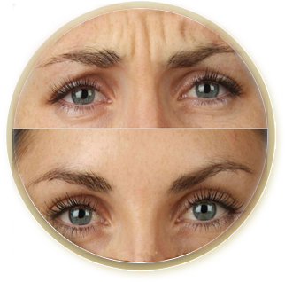
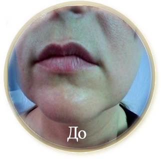
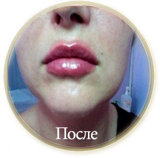
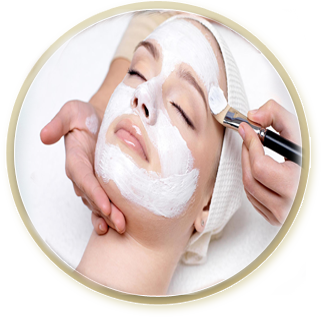
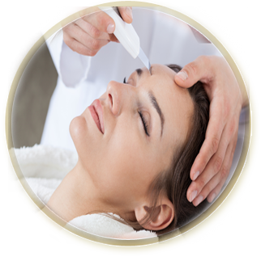
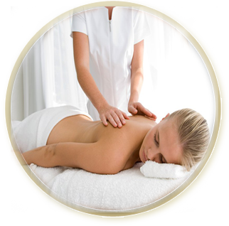

Мезонити 3D лифтинг это революционный метод омоложения, в борьбе с необратимыми возрастными изменениями. Во все времена красота и молодость считались безоговорочными ценностями, особенно в наши дни чрезвычайно большое значение приобретают внешние критерии представительности человека, в частности его безупречный внешний вид. В сфере медицинской косметологии эта чудо-процедура предусматривает использование такой инновации как "тред-лифтинг.
Мезонити (3D лифтинг) - это процедура создания "МОЛОДОГО КРАСИВОГО КОНТУРА ЛИЦА", направленная на профилактику и коррекцию птоза 1-2 степени.
Мгновенный эффект (сразу после процедуры), нарастающий в течение 2-3-х месяцев.
Мезонити не предусматривают радикального оперативного вмешательства на пути к более привлекательному внешнему виду; при этой процедуре отсутствует длительный период реабилитации.
Эффект от проведения 3d лифтинга заметен сразу после процедуры, однако в течение 2-3-х недель мезонити полномасштабно проявляют свои чудо-свойства, отчего эффективность подтяжки кожи лица существенно усиливается.

Ботокс - процедура введения в мимические мышцы одноименного препарата, представляющего собой очищенный и ослабленный нейротоник ботулина типа А. Под действием Ботокса наступает ослабление двигательной активности мышц, благодаря чему уже через 7 – 14 дней мелкие и глубокие морщины разглаживаются, а поверхность кожи становится ровной. Эффект от процедуры сохраняется, в среднем, на протяжении 6 месяцев, после чего процедуру следует повторить. Для достижения длительного и стойкого эффекта рекомендуется введение препарата 3 раза в год. Ботокс весьма популярен у пациентов и имеет множество сторонников среди специалистов-косметологов.

Контурная пластика – это процедура заполнения морщин специальными гелями (филлерами)на основе гиалуроновой кислоты.
Гиалуроновая кислота считается наиболее популярным и безопасным препаратом, который используется в контурной пластике.

Препараты для контурной пластики помогают выровнять микрорельеф кожи, разгладить морщины, создать молодой контур лица и многое другое, то, о чем мечтает каждая женщина, стремящаяся сохранить молодость и красоту.
Эффект виден сразу после процедури.

Инъекционные методики омоложения кожи предлагает практически каждая косметологическая клиника. Каждая из них имеет свои показания и решает конкретную эстетическую проблему. Комплексное и видимое омоложение кожи уже после первой процедуры (ведь морщины – это яркий, но единственный признак старения!) дает биоревитализация.
Биоревитализация – это внутрикожные микроинъекции нестабилизированной высокоочищенной гиалуроновой кислотой.
Показания к биоревитализации:
-мимические и статические морщины разной глубины на лице, шее и в области декольте;
-пигментация различной локализации;
-увядающая кожа (потеря тонуса и упругости);
-сухая, обезвоженная кожа;
-купероз (сосудистые «звездочки»);
-«синяки» и «мешки» под глазами;
Мезотерапия – метод, основанный на введении в организм различных биологически активных веществ путём инъекций. В косметологию она пришла из медицины, где давно и достаточно широко применяется.
Эффекты мезотерапии:
• Фармакологические эффекты. С помощью инъекций врач имеет возможность ввести нужный препарат в точной дозе в те участки тела и на ту глубину, которые необходимы для решения конкретной задачи. Если цель – устранение локальных жировых отложений, показано введение веществ, действие которых направлено на активизацию процессов липолиза (расщепления молекул жира). Если цель – борьба с морщинами, нужны средства, стимулирующие выработку коллагена и эластина.
• Улучшение местного кровоснабжения. При проведении мезотерапии рецепторы кожи стимулируются иглой, в ответ на такое раздражение происходит местное улучшение микроциркуляции крови. При необходимости значительного улучшения кровообращения, возможно введение препаратов с соответствующим фармакологическим действием.
• Стимуляция обновления клеток. Ведение иглы – это микротравма. В ответ на неё в области повреждения запускаются процессы заживления, стимулируется рост новых, молодых клеток.
• Опиатный эффект. Нервная система реагирует на уколы иглы, выделяет в кровяное русло эндогенные опиаты, призванные устранить возможные неприятные ощущения и дающие легкое состояние эйфории.
• Рефлексогенное действие. При проведении мезотерапии в рефлексогенных участках кожи, возникает эффект, аналогичный проведению иглорефлексотерапии

Врачами давно замечено: если аккуратно убрать поверхностный слой клеток кожи, она начинает интенсивно восстанавливаться, регенерировать и приобретает более молодой, свежий вид.
Контролируемый процесс удаления верхних слоёв кожи получил название «пилинг», от английского глагола to peel - отшелушивать, чистить.
На сегодняшний день разработано множество видов пилинга: механический, лазерный, ультразвуковой, ферментный. Но химический пилинг, основанный на использовании кислот, и имеющий более чем 100-летнюю историю применения, продолжает оставаться одним из самих популярных.
Миндальный пилинг: что это такое?
Миндальную, а по-научному феноксигликолевую, кислоту получают из экстракта горького миндаля и ей присущи все свойства фруктовых кислот. Однако, если рассматривать равные концентрации миндальной и гликолевой кислоты, то при их одинаковой эффективности первая действует мягче, не вызывает побочных эффектов, а, следовательно, подходит даже для тонкой и чувствительной кожи, а также для кожи с куперозом. Это связано с размером кислотных молекул, у миндальной они значительно крупнее (примерно в 8 раз) и поэтому медленнее проникают вглубь кожного покрова.
Преимущества миндального пилинга
К преимуществам миндального пилинга относят и то, что, во-первых, он может применяться в период солнечной активности, время, являющееся значимым противопоказанием для некоторых других видов пилинга, а, во-вторых, он подходит для людей с различным фототипом кожи.
Гликолевым пилингом принято называть поверхностный химический пилинг на основе гликолевой кислоты. Он хорош тем, что одинаково эффективен для всех типов кожи. Есть возрастные ограничения, но они более чем демократичны: процедуру не рекомендуется проводить пациентам моложе 15 лет. Всем остальным она однозначно принесет пользу.
Молекула гликолевой кислоты очень короткая, поэтому легко проникает в кожу, увлажняя ее. Кроме того, гликолевый пилинг лица оказывает антиоксидантное действие, запускает процессы неоколлагенеза, стимулирует выработку эластина и других полезных соединений. Как следствие, улучшается цвет кожного покрова, снижается его рельефность, а мелкие морщинки могут вообще исчезнуть.
Микротоковая терапия — это нехирургический метод подтяжки кожи лица, шеи и тела.
Процедура проводится при помощи биотерапевтического компьютерного оборудования американской фирмы «Bio-Therapeutic Computer». Аппарат изобретен в США всего несколько лет назад. Методики и аппаратура в настоящий момент зарегистрированы в России и в Украине. Принцип работы аппарата принципиально отличается от любого косметологического аппаратного воздействия.
Как это работает?
Во время процедуры микротоковой терапии включаются механизмы самовосстановления тканей на клеточном уровне, достигается эффект повышения эластического тонуса кожи и мышц, возобновляется синтез коллагена и эластина кожей, что способствует разглаживанию морщин.
Ноу хау аппарата заключается в том, что сила микротоков с ювелирной точностью соответствует той, на которой клетки в организме человека «общаются» между собой. А это значит, что процедура не заставляет клетки кожи работать в другом режиме, а «убеждает», как бы говорит — «делай, как я», что дает возможность получить гораздо больший и более длительный эффект от проделанной работы.
Процедура сопровождается глубоким увлажнением кожи и позволяет врачу-косметологу вводить различные питательные вещества в глубокие слои кожи.
Программы по восстановлению обменных процессов в коже, лифтинг, глубокое увлажнение, введение питательных веществ в различные слои кожи биотерапевтический компьютер позволяет программировать индивидуально, ведь на то он и компьютер.

Чистка лица – одна из самых популярных процедур, применяемых в косметологии, она может проводиться различными методами: механическим, вакуумным и другими. Но на сегодняшний день наиболее востребована ультразвуковая чистка лица (УЗ-пилинг кожи).
Это обусловлено тем, что применение ультразвука позволяет эффективно очистить кожу, не травмируя её, совершенно безболезненно. А также – универсальностью процедуры. Её проведение возможно на коже любого типа, даже на очень чувствительной, даже на коже с проявлениями купероза.
Под воздействием ультразвукового пилинга:
• Кожа очищается от внешних загрязнений.
• Удаляются отмершие клетки эпидермиса.
• Открываются протоки сальных желез, уменьшается их видимый размер.
• Под воздействием высокочастотных колебаний происходит «микромассаж» кожи на клеточном уровне, в результате чего ускоряются обменные процессы в клетках, улучшается кровоснабжение и циркуляциялимфы в коже.
Ожидаемый эффект
После ультразвуковой чистки лица кожа становится свежее, мягче, выравнивается её цвет и повышается увлажненность.
За счет усиления местного крово- и лимфообращения уменьшается отечность.
Роговой слой кожи, состоящий из отмирающих клеток, становится более тонким. При нанесении кремов и масок на кожу, очищенную с помощью ультразвука, улучшается проникновение активных веществ с её поверхности в глубокие слои.

Массаж – это один из методов в современной медицине, который применяется в качестве лечебно-профилактического, оздоровительного и гигиенического средства, и, в отдельных случаях, для восстановления и поддержания общей работоспособности. Популярность массажа и его распространение в последнее время достигла своего апогея. Массаж покоряет все больше людей, возникают множество новых приемов, "секретов" массажа. Массаж оказывает разностороннее воздействие не только на кожу и мышцы, но и на весь организм в целом. Импульсы, посылаемые посредством массажа, поступает в спинной мозг, затем к внутренним органам, головному мозгу и центральной нервной системе. В результате такого воздействия на весь организм улучшается самочувствие, нормализуется сон и аппетит, снижается давление, замедляется пульс, тело и мозг расслабляются и успокаиваются.